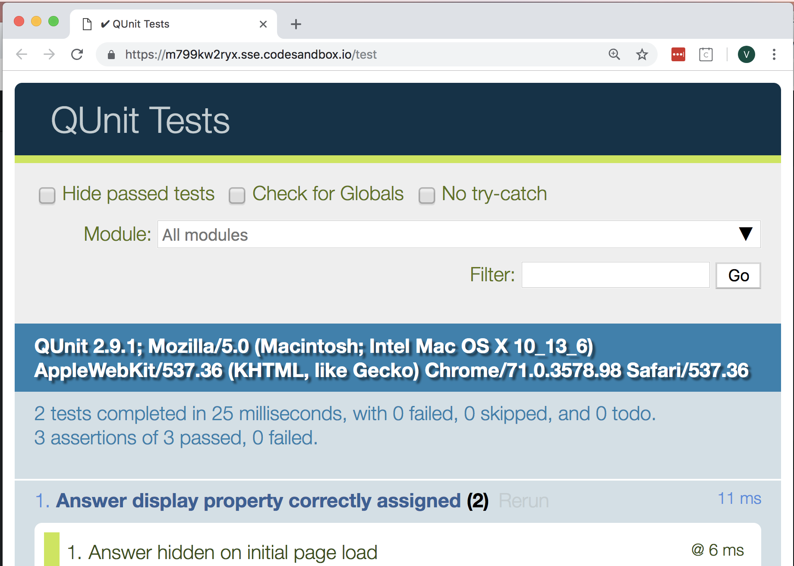
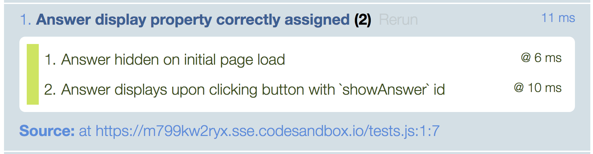
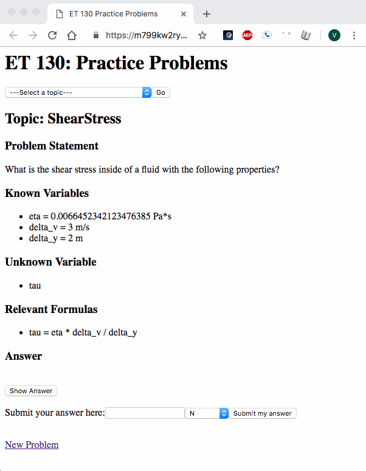
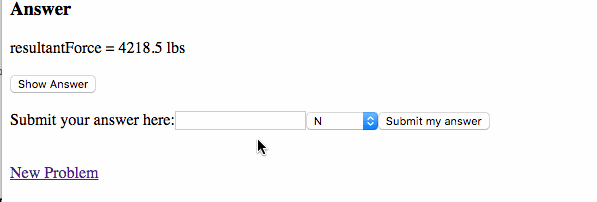
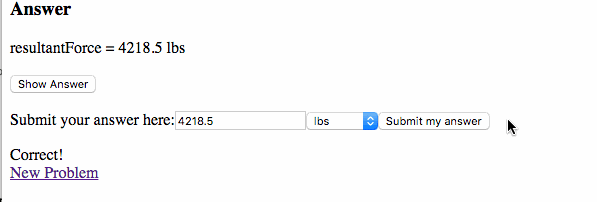
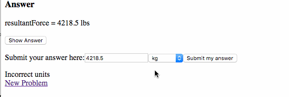
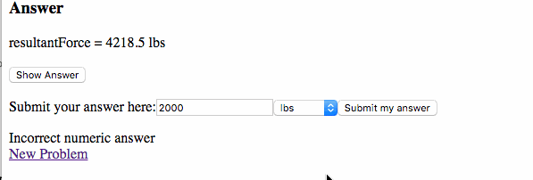

Project Journal: January 27, 2019
I (finally) wrote a test before writing a feature's code. The feature in question was adding a "Show Answer" button in my et130webapp which, upon being clicked, would show the answer to the user. This also meant that the page was loaded with the answer hidden.
In order to achieve my "non-negotiables" this weekend, I needed to figure out how to test front-end code that involved user actions (clicking buttons, submitting form data) that do not directly or immediately affect the backend code.
I chose to use QUnit, mainly because it is created by the authors of jQuery, and that's what I'm using for my DOM manipulation.
Testing jQuery
The online documentation for QUnit is very thorough and beginner-friendly. It took awhile for me to understand their example, but once I did, I found it surprisingly smooth to apply it to my situation.
server.js
Since I am using a pug template which is fed the practice problem from the server, I created a "/test" route
and copied the code from the home route ("/") into it.
views directory
I added a test.pug view and inserted the suggested minimal QUnit "Getting Started" code.
In that pug file, I added include index.pug underneath the QUnit setup code,
and I was ready to test my app using QUnit's beautiful interface.
QUnit tests
I first wanted to test that the page would load with the Answer hidden (i.e. display: none):
// assert if `display` is set to `none`
assert.equal(
$(".answer").css("display"),
"none",
"Answer hidden on initial page load"
);
I was very excited that this worked!

I next added the test to ensure that clicking "Show Answer" changed the display property to
block:

Here's how it looks on index.pug:

Adding answer submission functionality
We (I) were (was) off to the races with TDD! I was much more confident about writing code, and felt a strong sense of calm when writing tests before the feature's code.
Here were the different tests I wrote as I built out the functionality to allow the user to input and check their answer for a given practice problem:
User submits both the correct numeric answer and correct units

User submits the correct numeric answer and INCORRECT units

User submits the INCORRECT numeric answer and correct units

User submits the INCORRECT numeric answer and units

Pretty cool! I'll be reviewing the weekend non-negotiobles in tomorrow's post (spoiler alert: I didn't get them all done).
Cauliflower pizza
I was yet again enthused by eating cauliflower crust pizza, which is probably due to the fact that they may compensate cauliflower's lack of starchiness with cheese. Nevertheless, it does not leave behind the heavy feeling which the usual flour-based pizza crusts do.